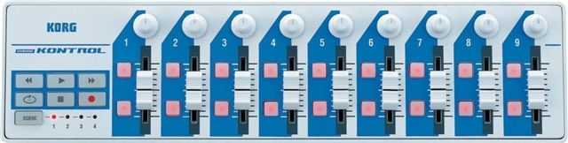
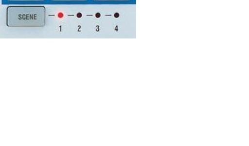
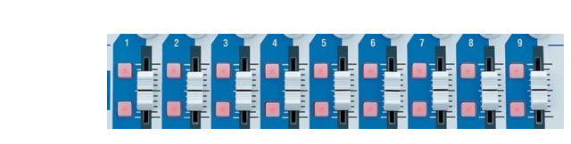
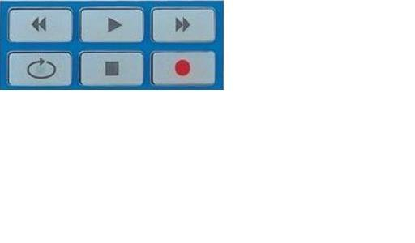
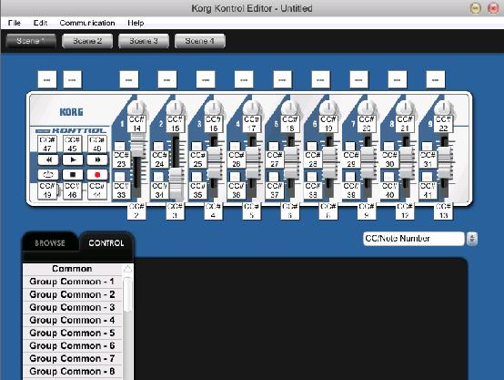
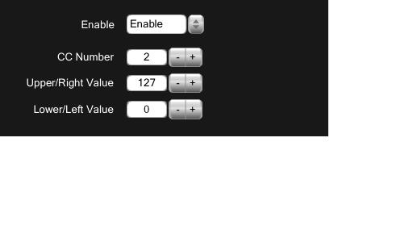
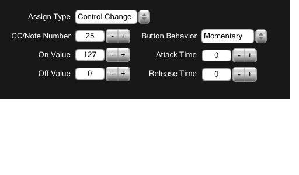
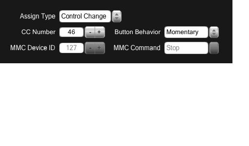

Par Jacques Bouault.
Le Korg Nanokontrol est l'un des plus miniaturisé et des moins chers controleurs Midi.
La taille de ses faders est un peu juste mais c'est un appareil qui tient dans la poche.
Dimensions 32 cm x 8,2cm x 2,95 cm, poids 290 grammes.

Lien vers la documentation constructeur: http://www.korg.com/nanoseries
Contrairement à d'autres contrôleurs Midi, le Nanokontrol ne peut être configuré directement. Il faut utiliser le logiciel gratuit Kontrol Editor, disponible à l'adresse suivante: http://www.korg.com/Product.aspx?pd=415 L'intérêt est de pouvoir sauvegarder différentes configuration et de les rappeler à loisir.
Un Nanokontrol propose 4 pages de presets, permettant d'avoir des identifiants différents pour chaque commande ( bouton, potentiomètre, rotatif). On navigue dans ces pages via la touches SCENE.

Une scene comprend:
9 faders et 18 boutons a côté des faders.

6 touches dites de transport.

9 encodeurs rotatifs.

Sélectionnez d'abord la scène (la page de préset) que vous souhaitez éditer. Cliquez sur la case blanche en haut à gauche: Dans le cadre noir en bas de la fenètre, on peu à présent nommer à la scène et lui définir un canal Midi ( de 0 à 15 dans WhiteCat, de 1 à 16 dans le Nanokontrol).
Les case blanches suivantes permettent d'assigner différents canne aux par groupe de commande.

Cliquez sur la case d'un potentiomètre rotatif ou linéaire. Vous pouvez modifier les paramètres suivants:
Enable ou Disable : actif ou non.
CC number: le pitch MIDI ( de 0 à 127 )
C'est à la reconnaissance des identifiants Channel midi et Pitch que WhiteCat réagit, quel que soit le type de signal émis par la commande.
Ex: Si vous:
attribuez au potentiomètre 1 de la Korg les identifiants CH 1 P27
que vous affectez cette commande à un fader dans WhiteCat
que vous éditez un rotatif ou un bouton avec les mêmes identifiants CH 1 P27,
le fader dans WhiteCat répondra aussi à celles ci.
Upper/Right et Lower/left Values sont les valeurs à zéro et à full du potentiomètre. Attention ! la valeur à full (Upper/Right ) doit être 127 ( le maximum du midi) et pas 100.

Assign Type: type de signal, Control Change ou Note, WhiteCat accepte les deux mais contrôle Change permet de régler plus de paramètres. Une exeption:la touche flash ne peut être contrôlé qu'en Control Change!
CC/Note Number : Pitch MIDI de 0 à 127 pour les CC mais exprimé en notation musicale anglo-saxonne pour les notes.
C'est à la reconnaissance des identifiants Channel midi et Pitch (note ou n° de CC) que WhiteCat réagit, quel que soit le type de signal émis par la commande. On Value et Off Value sont les valeurs à zéro et à full du bouton. Attention ! la valeur à full ( On Value) doit être 127 ( le maximum du midi) et pas 100. Noter que en mode note, off value ne peut être que 0.
Button Behavior permet de paramétrer le comportement du bouton:
1.Momentary pour un appui qui met on et un relachement qui met off
2.Toggle, comportement interrupteur ON/OFF: 1 appui ON, un deuxième appui OFF
Attack/Realase time: un fonction amusante qui permet de donner un temps de montée et de descente à un flash (uniquement pour les Control Change).

Les touches de transport peuvent émettre un signal MMC (Music Machine Control) ou Control Change. MMC n'est pas reconnu par whiteCat, il faut donc obligatoirement les paramétrer en CC. On beneficie de moins d'options qu'avec les autres touches en CC. Mais les symboles les rendent approprié à la commande du séquentiel ou d'un audio player.
Vous pouvez aussi enregistrer vos presets sur le disque dur [Save as].
Pour charger le preset dans le Nano Kontrol cliquez [Communication] puis [Write scene data].
par christoph
La version 2 du Nano Kontrol est extrêmement décevante:
Bref, zéro sur toute la ligne pour la nouvelle version 2.
Pour le même prix, l'iCONtrols, sorte de copie du Nano Kontrol v1, est nettement plus intéressante, et de meilleure facture !